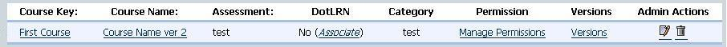
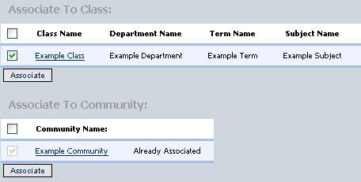
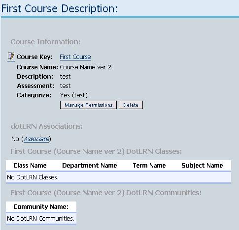

Each course can be associted to one or various dotlrn classes or communities. These associations will be displayed in the course description page to give the information to the user about the classess or communities that he/she will become a member of. You can associte one course by making click in the associte link in Your Course List or in the course description page.

To associate classes or communities to the course select check boxes to associate one or various at the same time. Associate classes and communities individually.

If you already have associations to dotLRN then a watch link will appear.

